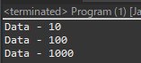

[Design pattern] 3-1. ストラテジーパターン(Strategy pattern)
こんにちは。明月です。
この投稿はデザインパターンのストラテジーパターン(Strategy pattern)に関する説明です。
この投稿からは振り舞パターンに関する説明です。
生成パターンはプログラムでインスタンスをどのように生成するかに関する型だし、構造パターンはインターフェースと抽象クラス、そして一般クラス間の構造的な定義に関する型です。
振り舞パターンはクラスとアルゴリズムを実際のプログラムでどのように使うかに関する説明するパターンです。
その中でストラテジーパターンは戦略という意味があるパターンですが、使うクラスに入力されるクラスのインスタンスにタイプにより結果を別にするパターンと言います。

#pragma once
#include <stdio.h>
#include <iostream>
using namespace std;
// ストラテジーパターンのインターフェース
class IStrategy {
public:
// 関数抽象化
virtual int calc(int data) = 0;
virtual ~IStrategy() { }
};
// NormalStrategyのストラテジーパターンクラス、IStrategyインターフェズを継承
class NormalStrategy : public IStrategy {
public:
// 関数再定義
virtual int calc(int data) {
// 入力値に10を掛けてリターン
return data * 10;
}
};
// SpecialStrategyのストラテジーパターンクラス、IStrategyインターフェズを継承
class SpecialStrategy : public IStrategy {
public:
// 関数再定義
virtual int calc(int data) {
// 入力値に100を掛けてリターン
return data * 100;
}
};
// Processクラス
class Process {
private:
// ストラテジーパターンのメンバー変数
IStrategy* strategy = nullptr;
public:
// ストラテジーパターンのインスタンスを入力
void setStrategy(IStrategy* strategy) {
// メンバー変数にインスタンスを設定
this->strategy = strategy;
}
// 出力関数
void print(int data) {
// ストラテジーパターンのメンバー変数がnullではなければ、
if (this->strategy != nullptr) {
// calc関数を利用してdataを再設定
data = this->strategy->calc(data);
}
// コンソールに出力
cout << "data - " << data << endl;
}
};
// 実行関数
int main() {
// インスタンス生成
Process process;
// ストラテジーパターンのインスタンス入力なく、10のデータを出力
process.print(10);
// NormalStrategyインスタンス生成
NormalStrategy normal;
// processインスタンスにストラテジーパターンを設定
process.setStrategy(&normal);
// データを出力
process.print(10);
// SpecialStrategyインスタンス生成
SpecialStrategy special;
// processインスタンスにストラテジーパターンを設定
process.setStrategy(&special);
// 10のデータを出力
process.print(10);
return 0;
}
すごく単純な構造です。Processクラスにストラテジーパターンを設定しなければそのまま10の値が出力されるし、NormalStrategyインスタンスを入力すると100の値が出力、SpecialStrategyインスタンスを入力すると1000が出力されます。
仕様に違いますが、ストラテジーパターンのクラスをフライウェイトパターンと一緒に使えばクラスの再使用率が高めるし、性能改善にもいい利点があります。
import java.util.HashMap;
import java.util.Map;
// ストラテジーパターンのインターフェース
interface IStrategy {
// 関数抽象化
int calc(int data);
}
// NormalStrategyのストラテジーパターンクラス、IStrategyインターフェズを継承
class NormalStrategy implements IStrategy {
// 関数再定義
public int calc(int data) {
// 入力値に10を掛けてリターン
return data * 10;
}
}
// NormalStrategyのストラテジーパターンクラス、IStrategyインターフェズを継承
class SpecialStrategy implements IStrategy {
// 関数再定義
public int calc(int data) {
// 入力値に10を掛けてリターン
return data * 100;
}
}
// Processクラス
class Process {
// flyweightパターンのマップ
private Map<Class<? extends IStrategy>, IStrategy> flyweight = new HashMap<>();
// ストラテジーパターンのメンバー変数
private IStrategy strategy = null;
// メンバー変数
private int data = 0;
// flyweightパターンのストラテジーパターンのインスタンス取得関数
private IStrategy getStrategy(Class<? extends IStrategy> clz) {
// flyweightマップにクラスタイプがあるか確認
if (!flyweight.containsKey(clz)) {
try {
// なければ、インスタンスを生成して入力する。
flyweight.put(clz, clz.getDeclaredConstructor().newInstance());
} catch (Exception e) {
// Exception処理をRuntimeException処理に変更
throw new RuntimeException(e);
}
}
// ストラテジーパターンのインスタンス取得
return flyweight.get(clz);
}
// ストラテジーパターンのタイプ入力
public void setStrategy(Class<? extends IStrategy> clz) {
// flyweightマップからインスタンス取得
this.strategy = getStrategy(clz);
}
// データ入力
public void setData(int data) {
// メンバー変数設定
this.data = data;
}
// 出力関数
public void print() {
// 出力値の任意変数
int val = data;
// ストラテジーパターンが設定されていたら
if (this.strategy != null) {
// 出力値をパターンの計算値に更新
val = this.strategy.calc(val);
}
// コンソールに出力
System.out.println("Data - " + val);
}
}
// 実行クラス
class Program {
// 実行関数
public static void main(String[] args) {
// Processインスタンス生成
Process process = new Process();
// データに10の値を入力
process.setData(10);
// コンソールに出力
process.print();
// ストラテジーパターンのタイプ設定
process.setStrategy(NormalStrategy.class);
// コンソールに出力
process.print();
// ストラテジーパターンのタイプ設定
process.setStrategy(SpecialStrategy.class);
// コンソールに出力
process.print();
}
}

上の例はストラテジーパターンにflyweightパターンを追加してストラテジーパターンのインスタンスを取得する時、メモリ使用を最小にしてクラスの再使用率を高めにしました。
using System;
using System.Collections.Generic;
// ストラテジーパターンのインターフェース
interface IStrategy
{
// 関数抽象化
int Calc(int data);
}
// NormalStrategyのストラテジーパターンクラス、IStrategyインターフェズを継承
class NormalStrategy : IStrategy
{
// 関数再定義
public int Calc(int data)
{
// 入力値に10を掛けてリターン
return data * 10;
}
}
// NormalStrategyのストラテジーパターンクラス、IStrategyインターフェズを継承
class SpecialStrategy : IStrategy
{
// 関数再定義
public int Calc(int data)
{
// 入力値に10を掛けてリターン
return data * 100;
}
}
// Processクラス
class Process
{
// flyweightパターンのマップ
private Dictionary<Type, IStrategy> flyweight = new Dictionary<Type, IStrategy>();
// ストラテジーパターンのメンバー変数
private IStrategy strategy = null;
// メンバー変数
private int data = 0;
// flyweightパターンのストラテジーパターンのインスタンス取得関数
private IStrategy GetStrategy(Type clz)
{
// flyweightマップにクラスタイプがあるか確認
if (!flyweight.ContainsKey(clz))
{
// なければ、インスタンスを生成して入力する。
flyweight.Add(clz, Activator.CreateInstance(clz) as IStrategy);
}
// ストラテジーパターンのインスタンス取得
return flyweight[clz];
}
// ストラテジーパターンのタイプ入力
public void SetStrategy(Type clz)
{
// flyweightマップからインスタンス取得
this.strategy = GetStrategy(clz);
}
// データ入力
public void SetData(int data)
{
// メンバー変数設定
this.data = data;
}
// 出力関数
public void Print()
{
// 出力値の任意変数
int val = data;
// ストラテジーパターンが設定されていたら
if (this.strategy != null)
{
// 出力値をパターンの計算値に更新
val = this.strategy.Calc(val);
}
// コンソールに出力
Console.WriteLine("Data - " + val);
}
}
// 実行クラス
class Program
{
// 実行関数
static void Main(string[] args)
{
// Processインスタンス生成
Process process = new Process();
// データに10の値を入力
process.SetData(10);
// コンソールに出力
process.Print();
// ストラテジーパターンのタイプ設定
process.SetStrategy(typeof(NormalStrategy));
// コンソールに出力
process.Print();
// ストラテジーパターンのタイプ設定
process.SetStrategy(typeof(SpecialStrategy));
// コンソールに出力
process.Print();
// 任意のキーを押してください
Console.WriteLine("Press Any key...");
Console.ReadLine();
}
}
ストラテジーパターンはできればクラスの結合度を低くして再使用率を高めにして性能改善がメイン目標です。そしてクラスはできれば分ける作業によりプログラムのUTテストや個別テストが良いと利点があります。
でも、このストラテジーパターンの欠点はクラスを分けすぎることでストラテジーパターンで分散化すると可読性が悪くなることがあります。
そしてクラス作成が多くなるので、プロジェクト管理が難しくなるし、プロジェクト難易度が高くなる問題があります。
ここまでデザインパターンのストラテジーパターン(Strategy pattern)に関する説明でした。
ご不明なところや間違いところがあればコメントしてください。
- [Design pattern] 3-6. ステートパターン(State pattern)2021/11/17 20:04:47
- [Design pattern] 3-5. メメントパターン(Memento pattern)2021/11/16 20:01:36
- [Design pattern] 3-4. イテレータパターン(Iterator pattern)2021/11/15 19:31:28
- [Design pattern] 3-3. コマンドパターン(Command pattern)2021/11/05 17:01:42
- [Design pattern] 3-2. 責任の連鎖パターン(Chain of responsibility pattern)2021/11/04 19:27:58
- [Design pattern] 3-1. ストラテジーパターン(Strategy pattern)2021/11/03 18:38:52
- [Design pattern] 2-7. ファサードパターン(Facade pattern)2021/11/02 19:32:31
- [Design pattern] 2-6. プロキシパターン(Proxy pattern)2021/11/01 19:42:44
- [Design pattern] 2-5. フライウェイトパターン(Flyweight pattern)2021/10/29 19:48:27
- [Design pattern] 2-4. デコレーターパターン(Decorator pattern)2021/10/28 20:11:13
- [Design pattern] 2-3. ブリッジパターン(Bridge pattern)2021/10/27 20:32:21
- [Design pattern] 2-2. コンポジットパターン(Composite pattern)2021/10/27 20:30:54
- [Design pattern] 2-1. アダプターパターン(Adapter pattern)2021/10/26 19:12:40
- [Java] 58. EclipseでSpring bootのJPAを設定する方法2022/02/23 18:11:10
- [Java] 57. EclipseでSpring bootを設定する方法2022/02/22 19:04:49
- [Python] Redisデータベースに接続して使い方2022/02/21 18:23:49
- [Java] Redisデータベースを接続して使い方(Jedisライブラリ)2022/02/16 18:13:17
- [C#] Redisのデータベースを接続して使い方2022/02/15 18:46:09
- [CentOS] Redisデータベースをインストールする方法とコマンドを使い方2022/02/14 18:33:07
- [Design pattern] 3-6. ステートパターン(State pattern)2021/11/17 20:04:47
- [Design pattern] 3-5. メメントパターン(Memento pattern)2021/11/16 20:01:36
- [Design pattern] 3-4. イテレータパターン(Iterator pattern)2021/11/15 19:31:28
- [CentOS] Linux環境(CentOS)でCassandra(NoSQL DB)をインストールする方法(DBeaverブラウザでNoSQL使い方)2021/11/12 17:33:58
- [Design pattern] 3-3. コマンドパターン(Command pattern)2021/11/05 17:01:42
- [Window] apache-tomcatでロードバランシング(Load balancing)する方法とセッションクラスタリング（セッション共有）2021/11/05 16:58:45
- [Window] Apacheでmod_jkとmod_proxyの差異、apacheでtomcatのwebsocketのプロキシフォーワードする方法2021/11/05 16:55:05
- [PHP] Apache環境の同じホスト中でPHPとJava(Servlet)を同時に起動、運用する方法2021/11/05 16:52:04
- [C#] 61. ウィンドウフォーム(Window form)でスレッド(Thread)を使い方、クロススレッド問題解決2021/11/04 19:29:51